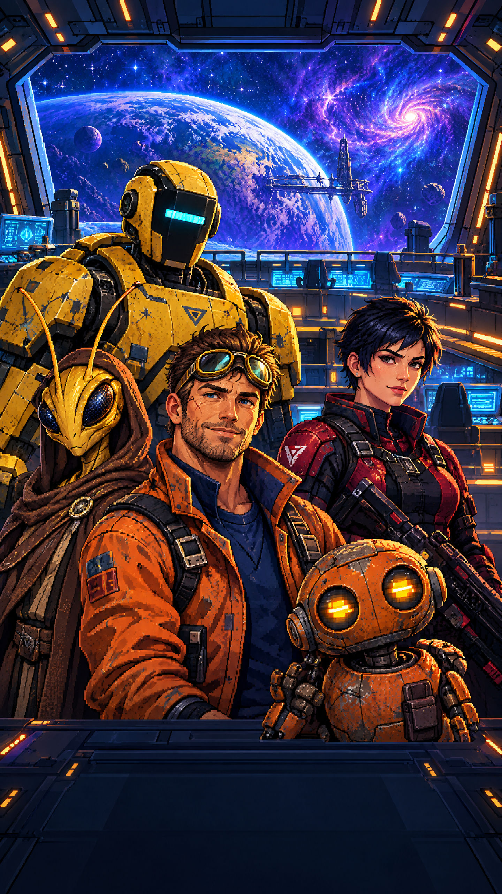

WARP CREW · MOBILE VISUAL AUDIT
Two first-session screens
Unrendered proposals only. The splash uses one newly generated but unapproved art output for review; it is not approved final art.
01 · OPENING
Splash
One clear promise, one clear way aboard.


CREW
- Make the crew the opening image. The current capture shows an asteroid field and cockpit; Bolt and Nemi read as small cutouts. Use one full-bleed crew scene and remove the separate portrait layer. Seen in capture.
- Back the logo. Keep the title inside a dark, high-contrast plaque so it stays legible over any future art. Proposed.
- Keep the bottom panel to progress and one action. The loading meter and “Board ship” already do the job; omit the extra tagline. Proposed.
02 · FIRST JOB
Ship / Shields assignment
Make the ship state glanceable and the next move obvious.

- Put resources in matching icon-and-number boxes. The current fuel and credits sit directly on the dark bar, with small icons and no card grouping. The proposal uses the same 24px icons and 20px numbers in three equal cards. Current CSS audit: HUD resource icons are 18px; labels can drop to 12px.
- Keep hull visible; move “Spur Anchor” to a complete location label. The current chip truncates to “SPUR ANC…”, while shield status has no plain-language label. The proposal names the location and gives the selected station its own marker. Seen in capture.
- Give the tutorial one short prompt and one amber action. The current card repeats “send Bolt to Shields” in a sentence and button. “Shields are down.” explains the need; the button says what to do. Seen in capture.
- Keep camera controls easy to tap. Use 44px minimum buttons and 8px separation in the ship view; retain pan and pinch zoom gestures. Confirm gesture targets on-device.
Checklist results
Source CSS measurements: 11 distinct pixel font sizes; 3 of 11 match the 16/18/20/28/40px scale. 21 declarations are below 16px (smallest 2.2px). Spacing: 158 of 243 values are off the 8px grid (65%). Six :active rules; five scaled subtrees.
Contrast script: 1 pair passes at 14.15–16.00:1; 22 pairs are unchecked because the script could not resolve CSS variables or translucent backgrounds. No failures were reported, but unchecked is not a pass.
Render unavailable: browser policy blocked opening the local mockup file. The proposed screens have not been rendered. Not verified: 22 source contrast pairs; grayscale separation for both screens; physical-device gesture and safe-area behavior; whether the provisional splash crop and ship marker remain clear on other phone sizes.
Approve these changes? You can approve all, pick by number, or reject.